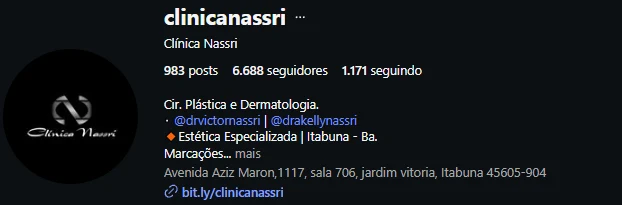

Vocês já construíram
a reputação.
- 15,4 mil
- @drvictornassri
- 7,2 mil
- @drakellynassri
- 6,7 mil
- @clinicanassri
- 2.758
- publicações somadas
Todo esse trabalho leva a um link encurtado.


E quem ainda não conhece vocês começa no Google.